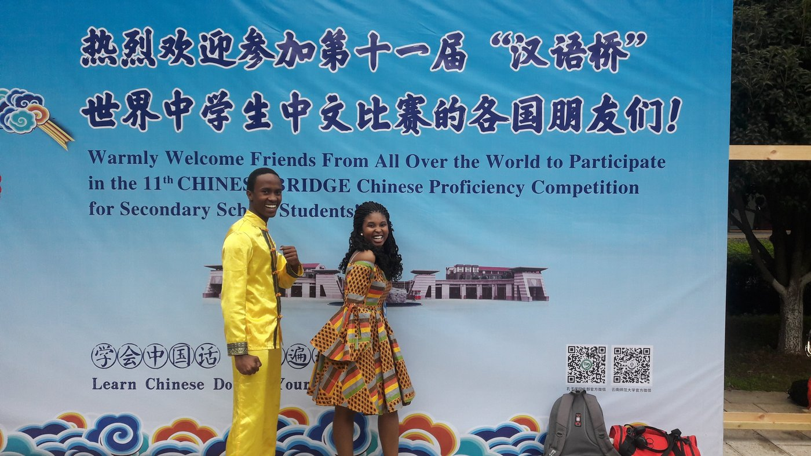
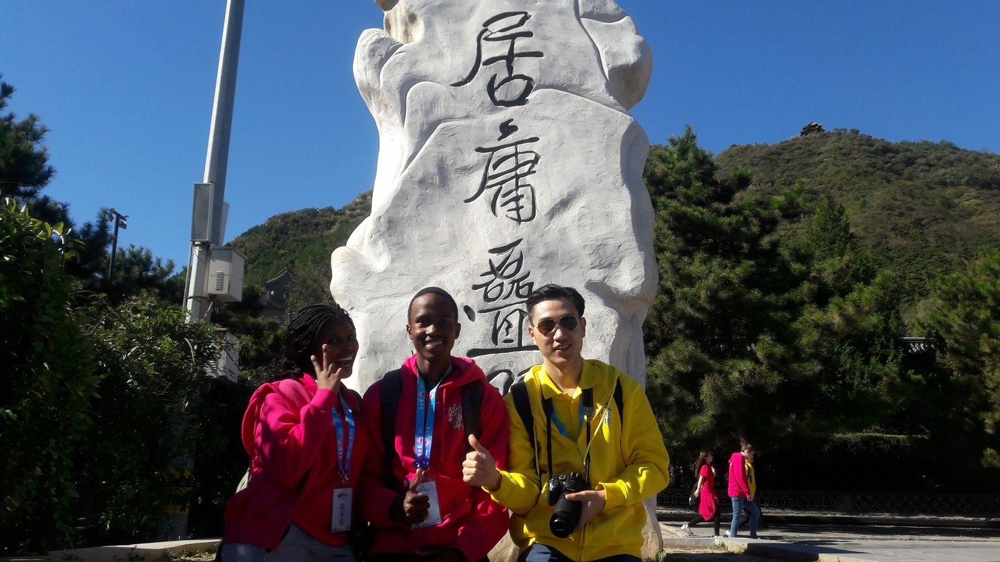
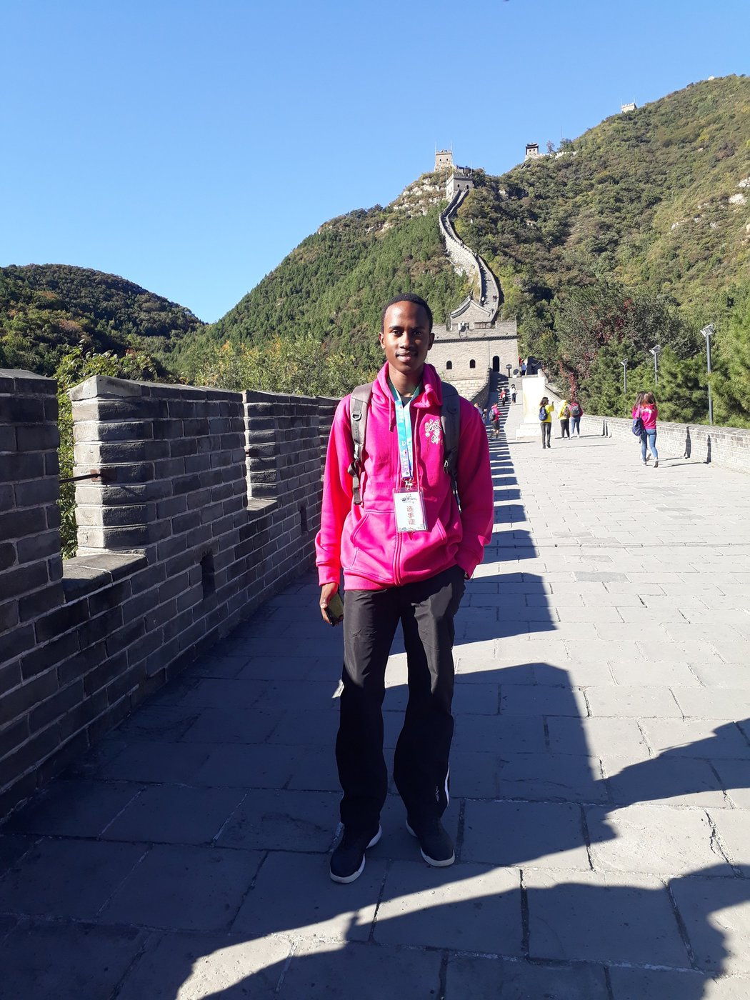

About
Two disciplines, deliberately. Here is how they fit together and what I can do with them.
I grew up in Botswana and took my school qualifications there, coming out of Maru A Pula School in Gaborone with A-Levels in Computer Science, Physics and Mathematics. I moved to the UK for a BEng in Mechatronic Engineering at the University of Manchester, and stayed on for an MSc in Data Science at the University of Leicester.
Mechatronics is a useful degree to hold because it refuses to specialise too early. Over three years I wrote embedded firmware in C, designed circuits and laid out PCBs, worked through control theory and signal processing, and built robots that had to function in a physical room rather than a simulation. The strongest results came from the project modules rather than the exams, which tells you something about how I work: give me a system to make function and I will get further than I will from a problem sheet.
The MSc was a deliberate second direction rather than a change of mind. Engineering produces a great deal of data and comparatively few people who are comfortable on both sides of it. A year of statistical modelling, machine learning, functional data analysis and visualisation has made me better at the engineering, not least because I now interrogate what the numbers coming off a system actually support.
The dissertation brought both together. Four of us built a roadside assistance platform for Addis Ababa under a commercial brief, where the dispatch problem was genuinely algorithmic and the interface had to work for people using mobile money in two languages on unreliable connections. I took the client-facing half.
Outside the technical work I have spent most of my life in karate, where I have been instructing since 2017. Teaching a physical skill to people who cannot yet do it is the best training in clear explanation I have encountered, and coaching a squad through an international tournament taught me more about preparation under pressure than any module did.
Skills
Programming
Python, C, C++, R, MATLAB, Dart, SQL
Data and statistics
pandas, NumPy, SciPy, statistical modelling, machine learning, functional data analysis, forecasting, permutation and hypothesis testing
Visualisation and reporting
Tableau, Excel including Power Query and PivotTables, matplotlib, Quarto, dashboard and interaction design
Embedded and hardware
STM32 firmware, microcontroller engineering, Altium PCB design, control systems, sensors and instrumentation, power electronics, digital system design
Software and tooling
Django, Django Channels, Flutter, PostgreSQL, WebSockets, Git, Railway
Governance and practice
AI governance, UK GDPR, EU AI Act, data provenance and quality assessment, reproducible workflows, audit trails
Leadership and coaching
- Senior Instructor, Bakwadi Karate Academy2021 to present, remote since relocating
- InstructorFrom 2017
- Black belt2014, having started in 2009
I coached a squad of around 30 athletes to the Cape Town Open international tournament, where they took 11 gold medals. Alongside coaching I invigilated gradings and conducted adherence audits, enforcing sporting codes and safety regulations across the academy.
Since relocating to the UK I have continued in a non-active remote capacity, focused on administration and projects rather than in-person instruction. I also served as regional representative for the Botswana Student Union UK and Ireland, acting as liaison between the Manchester and Liverpool student body and the Botswana High Commission, and coordinating a sports tournament for over 100 participants.
The karate page covers the training, coaching and grading record in full, with the reference and 3rd Dan certificate attached.
Community and culture
Two things outside engineering have shaped how I work with people, and both started in Botswana.
Children of the Soil
Technical Director, Botswana, 2020 to 2021
I founded a youth organisation built around social awareness, and ran it as its technical director. The central activity was a weekly workshop programme, which meant approaching community leaders and subject specialists, persuading them to give their time, and building a schedule that young people would actually turn up to. The sessions dealt with mental health and with questions of social identity, subjects that young people in Botswana had few open spaces to discuss.
The other half of the role was production. We staged theatre shows and music festivals at the Maitisong Theatre in Gaborone, and I handled the full production lifecycle: equipment setup, technical scheduling and making sure a room full of people and a stage full of gear came together on the night. It was my first experience of a deadline that could not move, which is a lesson that has been useful in every project since.
Chinese Bridge, 2018
Representing Botswana, competition final in China
Chinese Bridge is a Chinese language proficiency competition run by China's Ministry of Education for students learning Chinese outside the country. Preliminary rounds are held nationally, and the students who come through them travel to China for a global final that draws contestants from well over a hundred countries. I represented Botswana at the eleventh edition, the secondary school students' competition, in 2018.
It is not only a language test, which is what makes it worth mentioning. Competitors are judged on spoken Mandarin, on knowledge of Chinese history and culture, and on a performance element, so you are asked to demonstrate a language and an art form at the same time, in front of an audience and a panel, in a country you have just arrived in. Alongside the rounds, the programme takes participants through the culture directly, from landmark sites to traditional arts such as shadow puppetry, opera and brush painting.
What it represents is the point of it. The competition exists to build understanding between countries through language rather than about it, and going as part of the Botswana contingent meant carrying our own culture into that exchange as much as learning theirs. Preparing for it taught me how much work sits behind sounding competent in an unfamiliar language, and competing in it taught me to keep my composure while doing something difficult in public, which turns out to be the same skill a technical presentation asks for.



Interests
Cars, in the hands-on sense. Before moving to the UK I restored vehicles at home in Botswana, which meant mechanical strip-down, engine repair and rebuild rather than anything theoretical. It is the reason mechatronics appealed in the first place, and the reason a project about vehicle recovery held my attention for four months.